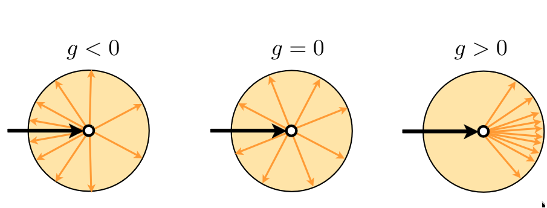
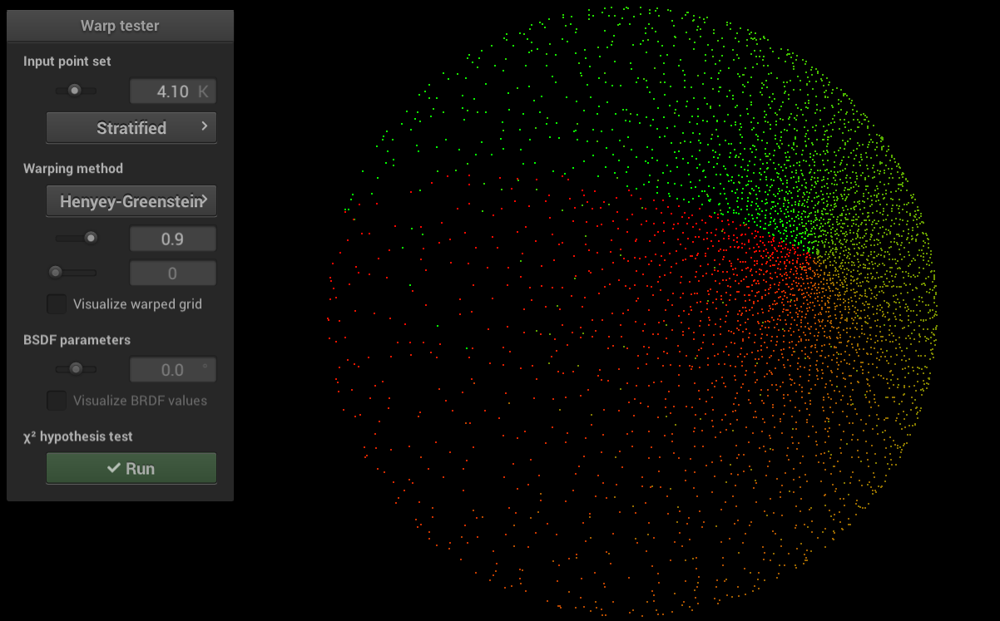
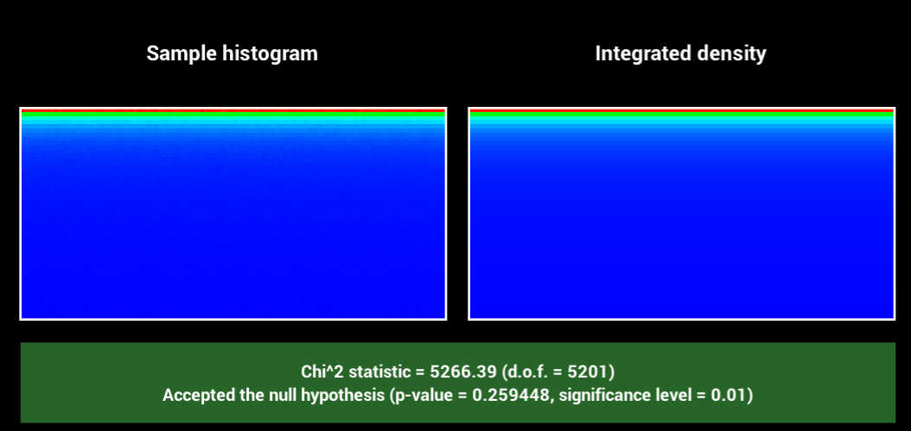
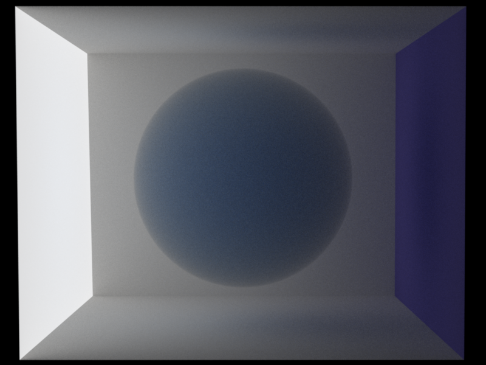
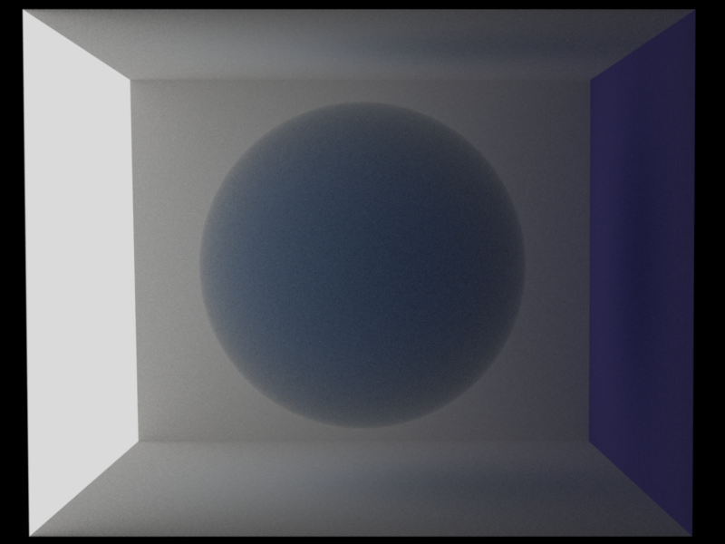
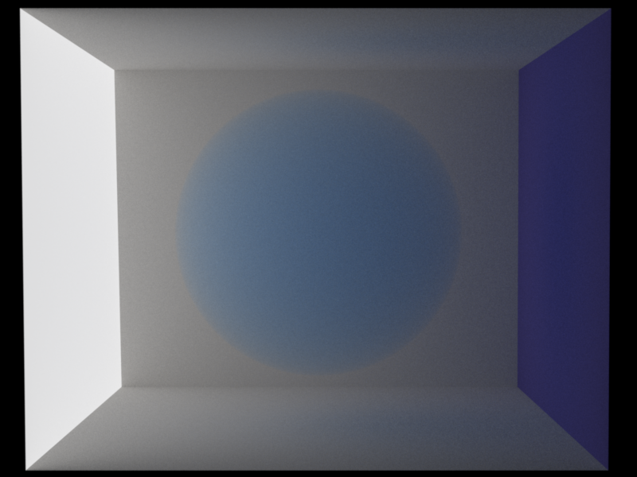

# Introduction
As seen in class, the Henyey-Greenstein phase function is a function defined as :
$$
p(\cos\theta) = \frac{1 - g^2}{4\pi (1 + g^2 - 2g\cos\theta)^{3/2}}
$$
With the value g being a float in the interval [-1, 1]. The Value of g defines the scattering properties of the medium.

Ideally, I wanted to calculate Henyey-Greenstein sampling by using the inverse CDF method similarty to how we did for the Beckmann distribution. It turns out, however that there is no closed form solution to the integral of the Henyey-Greenstein pdf. Thankfully, the PBRT book provided me with the solution to this:
$$
\theta = \cos^{-1} \left( \frac{1}{2g} \left( 1 + g^2 - \frac{(1 - g^2)^2}{(1 - g + 2g\xi_1)^2} \right) \right) \\
\phi = 2 \pi \xi_2
$$
If $g==0$, we set $\theta = \cos^{-1}(1 - 2\xi_1)$
Note that, in the implementation the sign of g gets inverted. This is because in theory $w_i$ points into the interaction, whereas in my implementation $w_i$ points outward.
I implemented the sampling of this function in the `warp.cpp` class, tested it using `chi2` and then integrated it to a (new) `hg.cpp` class
# Warp Methods
I added two methods to `warp.cpp`:
**Vector3f squareToHenyeyGreenstein(const Point2f &sample, float g)**
For this method, I sample the angles $\theta$ and $\phi$ as written above (with inverse sign for g).
I proceed to use the `common.h` method `sphericalDirection` to transform the angles from spherical coordinates to a vector in cartesian coordinates on the unit sphere.
**Vector3f squareToHenyeyGreenstein(onst Vector3f &v, float g)**
For this method, I simply apply the above formula for the HG phase function on the cosine of the given vector (assume it is in local frame). Please not we have to take the negative of the given vector for this phase to match the sampling mechanism due to the convention of $w_i$ and $w_o$ both pointing outwards from the interaction point in our implementation.
**Validation**
I proceeded by changing the `warptest.cpp` class to accomodate this new phase function and perform the chi2 tests. Please note that I cast the parameter value from (0,1) to (-1,1) before calling the newly implemented methods in `warptest.cpp` (ie. the result for 0.9 below is in fact the result for $g = 2*param - 1 = 0.8$)


# HenyeyGreenstein class
I then proceeded to write the `hg.cpp` class as following:
- **Attribute** : `m_g` a float value in the interval [-1,1]
- One constructor that retrieves the value of g from the propList
- `sample` method that samples a scattering direction and returns the weighted value of the phase function. This is done simply by calling the `squareToHenyeyGreenstein` in the local frame descibed by $-w_i$ and transforming it into the World frame of the phase function (which is the local frame of the interaction). I then return the weighted value of the phase function, which is simply 1.0 as the phase function and pdf cancel out (both are the HG equation)
- `eval` which returns the value of the function for a given direction. This returns the equivalent value as the pdf, so I simply call the pdf method.
- `pdf` which returns the probability of sampling a given direction. Simply call the ´squareToHenyeyGreensteinPdf´ method.
- `toString` method returning a human readable string for an instance of HG
- `getClassType` returning `EPhaseFunction`
**Validation**
These scenes can be found in `scenes/hg/`. Mitsuba was sampled with 64 samples, Nori was sampled with 512 samples.
There may be a tiny difference in the light radiance between Nori and Mitsuba, but these comparisons prove that my implementation acts correctly compared to Mitsuba with regard to the Anisotropic Phase Function.



No major difficulties were encountered during the implementation of this feature.